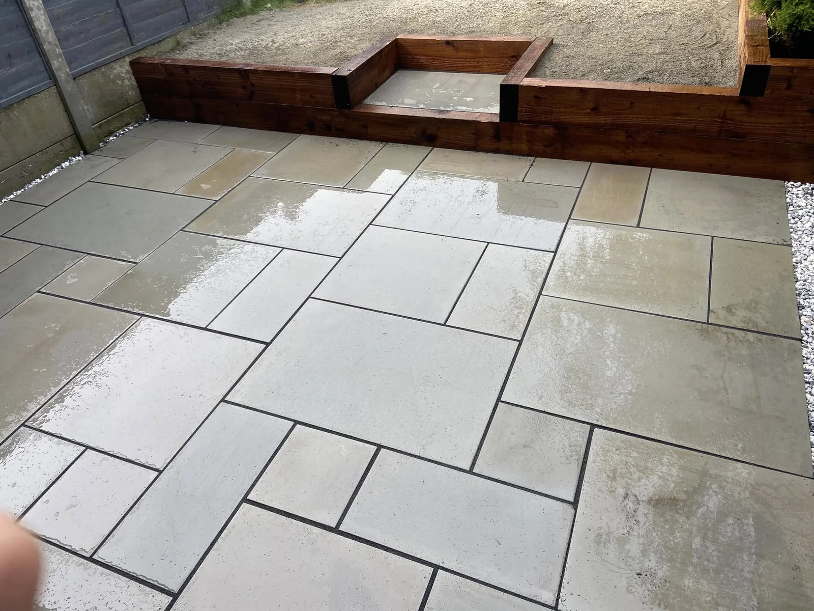

MANCHESTER LANDSCAPE AND GROUNDWORX LTD · GREATER MANCHESTER
Garden landscaping.
Make more of the whole garden.
MANCHESTER LANDSCAPE AND GROUNDWORX LTD
Let’s shape your space.
Bring lawns, raised beds, paving and garden features into a coherent layout. Our work includes sleeper-edged beds, artificial grass, gabion features and timber structures. Start with how you would like to use the space.
Send a few photographs, your postcode and approximate dimensions. We can discuss the work and arrange the next step.
Request a free quote →OUR PROJECTS
A closer look at the work.
Select a photograph for the full view.
FREE PROJECT QUOTE
Let’s talk about your outdoor space.
Tell us what you have in mind. This form opens a WhatsApp draft with all your details, ready for you to review, add photos and send.